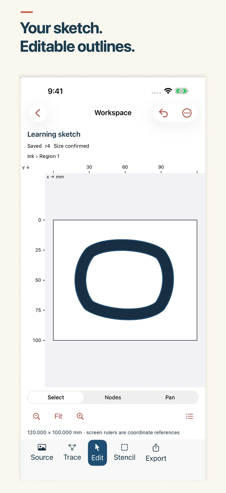
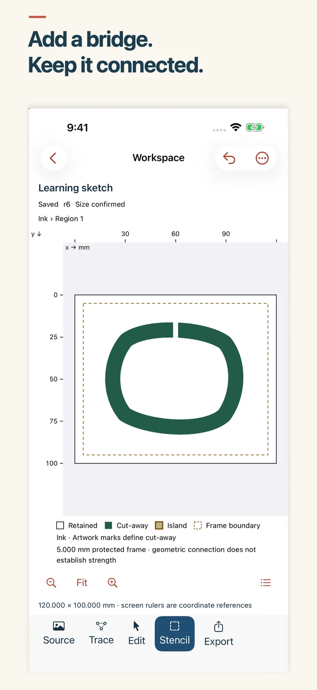
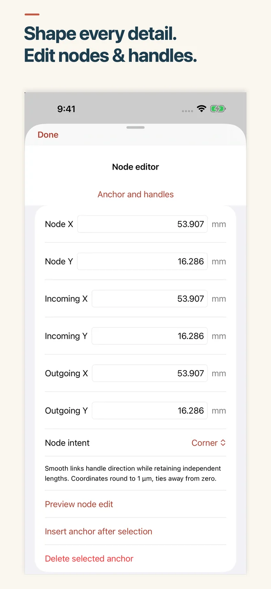

MubarakLab
InkCut — Sketch to Stencil
Turn a sketch into something you can make.
Your artwork, ready to refine
Bring in a photo or scan, capture a sketch, or draw with your finger. Clean the image, trace filled regions on your device and refine editable vector outlines on your iPhone.
Preparing for release on iPhone, iOS 26 and later. Intended US price: $14.99 upfront, with all v1 tools included. No account, in-app purchase, subscription, advertising or external AI service.
From first sketch to physical size
- See the source. Review cleanup and trace settings before accepting new vector work.
- Refine the outlines. Edit anchors, handles, shapes and layers. Preserve the project for another session.
- Review stencil islands. Add retained-material bridges and recheck connectivity. Test your design with your chosen material.
- Choose your output. Generate physically sized SVG, printable PDF or a PNG preview. Keep editable backups separately.
Sketch, refine, connect



Choose physically sized SVG, printable PDF or a PNG preview when your design is ready. Save an editable .inkcut backup to keep working later.
Keep the editable original
Projects and normalized source artwork are stored locally. You choose where exports and editable .inkcut backups go. Files providers, receiving apps and device backups use their own services.
Tracing follows region boundaries; it does not create centerline tool paths or editable lettering. Check imported size in your destination software. Check your cutting software and material requirements before making a piece.